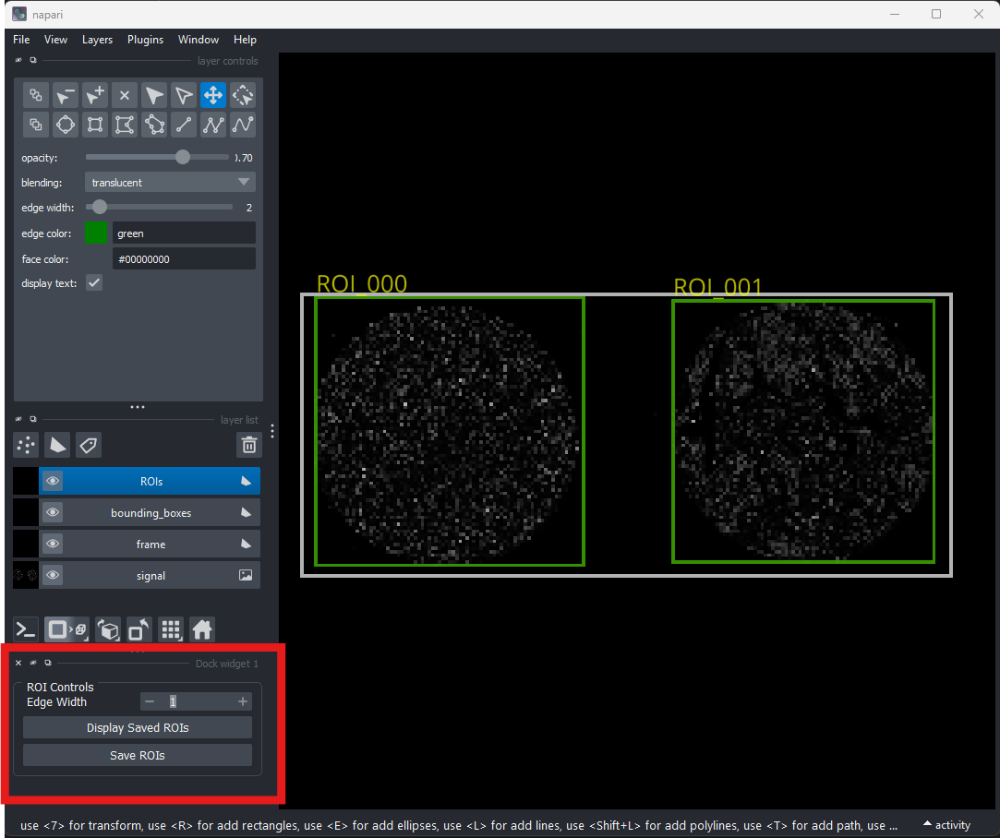

ROI Definition
Overview
The initial stage of the plex-pipe pipeline involves defining the coordinates for Regions of Interest (ROIs). These regions are subsequently extracted and processed as individual SpatialData objects.
- Input: A representative whole-slide image (usually DAPI).
-
Output:
- rois.pkl: Parameters defining ROIs.
- rois.csv: A human-readable definition of ROIs.
- rois.png: A visual overview of the defined ROIs.
This step is performed interactively using 01_roi_definition_demo Jupyter notebook.
The notebook is divided into two parts:
Execute the notebook cells sequentially to progress through the ROI definition workflow.
Utilizing SAM2 for automated image segmentation requires an auxiliary environment configuration and the specification of model checkpoints, see SAM2 Configuration and Environment Setup section.
All ROIs (including SAM2 suggestions) are editable.
Drawing ROIs manually
The notebook requires the user to specify the path to the configuration file (config_path), which defines the target image and the specific resolution level to be utilized for ROI definition, see also config schema.
When the resolution parameter remains unspecified, the loader defaults to the multi-resolution approach.
Note
Coordinate Scaling: All transformations between the Napari viewer and the final save files are handled automatically, ensuring coordinates are scaled back to the original full-resolution image shape.
Manual definition of ROIs is performed using a Napari viewer with custom widgets.
Layers in the viewer
-
Signal Layer: The loaded image data.
-
Frame Layer: A white rectangle framing the full image extent.
-
ROIs Layer (Green): Use Napari's native shape tools to draw rectangles or polygons to define ROIs in this layer.
-
Bounding Boxes Layer (Yellow): Automatically updated upon saving (Save ROIs Button) to reflect the extent of your ROIs.
Interactive Controls
You can find these buttons in the Napari dock widget on the left:
-
Display Saved ROIs: Reloads the ROIs from the path specified in your config.
-
Save ROIs: Triggers saving of the output files (overwriting previous saves).
-
Edge Width Slider: Dynamically adjusts the stroke thickness of shapes for better visibility on high-resolution images.

Automatic ROI suggestions
For slides with many regions (e.g., TMAs), the Segment Anything Model 2 (SAM2) can suggest ROIs.
SAM2 Configuration and Environment Setup
To utilize automated ROI suggestions, follow the installation protocols provided by the Segment Anything Model 2 (SAM2) and download the model checkpoints. Ensure that plex-pipe is installed within this dedicated SAM2 environment.
SAM2 does not natively support Windows. For Windows-based workflows, you must install the Windows Subsystem for Linux (WSL) and configure the SAM2 environment within the WSL distribution.
Cross-Platform Execution:
- Windows: The code automatically detects the OS and routes the SAM2 command through WSL.
- Linux: Runs directly using the specified sam_env.
Defining Model and Environment Paths
The notebook requires the absolute paths to both the SAM2 model checkpoints and the Python executable of the SAM2 environment.
You may define these parameters manually as a dictionary:
sam_config = {
'model_path': '/mnt/d/sam2_test/sam2', # Absolute path to SAM2 checkpoints
'sam_env': '/home/kasia/miniforge3/envs/sam2-env/bin/python' # Path to SAM2 Python executable
}
Alternatively, use the load_workstation_config helper function to import settings from a YAML file.
This approach allows a single centralized file to manage configurations for multiple workstations based on their hostnames.
The file structure is as follows:
workstations:
WORKSTATION_HOSTNAME: # As returned by platform.node()
model_path: "path/to/model"
sam2_env: "path/to/environment/python"
Template configuration files are available in the project's examples folder.
Note
When configuring the workstation YAML, provide WSL-compliant paths (e.g., /mnt/d/...). However, the main analysis configuration file does not require modification; the notebook automatically handles path translations between Windows and WSL during execution.
Filtering Parameters
Adjust the following variables within the notebook to refine the model's output:
nominal_small_size: The expected diameter (in pixels) of the target objects. Use the Napari viewer to measure and determine this value for your specific dataset.min_delta_factor/max_delta_factor: Multipliers used to establish the area thresholds for filtering masks that are either too small or too large relative to the nominal size.
Workflow
The underlying code for these steps is available in the notebook cells, allowing for full customization; however, the standard workflow is outlined below:
- Configure Parameters: Define the filtering criteria as described above.
- Execute Segmentation: Run the SAM2-specific cells to initiate the automated detection. The ROIs and bounding boxes will be automatically populated into the Napari viewer for review and manual correction.
- Finalize and Save: Once the regions are validated, manually trigger the saving protocol via the
Save ROIsbutton. - Contrast Sensitivity: The SAM2 subprocess utilizes the current Contrast Limits of the Napari 'signal' layer to normalize the image prior to segmentation. Ensure the image contrast is stretched to clearly distinguish objects of interest; this adjustment can also be utilized to exclude dim background artifacts.
- Dynamic Resolution (Multi-Resolution Inputs): If the input image is multi-resolution (
im_levelis not specified), SAM2 performs segmentation on the resolution level currently active in the viewer.- Object size parameters are adjusted automatically to match the current scale.
- If the workstation encounters memory errors, zoom out to a lower resolution level for segmentation.
- If the ROI geometries are insufficiently precise, zoom in to a higher resolution level to improve segmentation accuracy.
ROI Output Schema
The primary output is rois.pkl, which defines the geometry of each roi.
This schema is provided for informational purposes only; the pipeline manages this data structure automatically, and no manual modification is required by the user.
| Column | Description |
|---|---|
roi_name |
Unique identifier for the roi (e.g., ROI_000, ROI_0011). |
row_start |
Y-coordinate of the top edge of the bounding box. |
row_stop |
Y-coordinate of the bottom edge of the bounding box. |
column_start |
X-coordinate of the left edge of the bounding box. |
column_stop |
X-coordinate of the right edge of the bounding box. |
poly_type |
Type of shape (rectangle or polygon). |
polygon_vertices |
(y, x) coordinates defining the polygon. |
Example output files can be found in the examples folder.